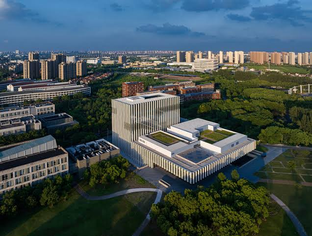
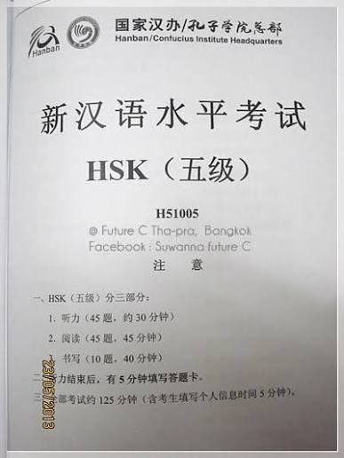

HSK5
การใช้ภาษาขั้นสูงและการสื่อสารเชิงวิชาการ HSK 5 มุ่งเน้นการเข้าใจภาษาจีนในระดับที่ใกล้เคียงกับเจ้าของภาษา ผู้เรียนต้องมีความเชี่ยวชาญในการอ่านบทความยาว วารสารวิชาการ และวรรณกรรม สามารถจับใจความ อารมณ์ และน้ำเสียงของผู้เขียนได้ บททดสอบการฟังจะมีความเร็วระดับปกติที่คนจีนใช้พูดคุยกันในชีวิตประจำวัน หรือในรายการข่าว/สัมภาษณ์ ในส่วนการเขียน ผู้เรียนต้องสามารถแต่งบทความตามหัวข้อที่กำหนดโดยใช้คำศัพท์และไวยากรณ์ระดับสูงได้อย่างถูกต้อง เหมาะสำหรับการใช้ทำงานในบริษัทข้ามชาติ หรือการศึกษาต่อในระดับปริญญาโทและเอก
รายละเอียดข้อสอบ: คะแนนเต็ม 300 คะแนน (ผ่านที่ 180 คะแนน)
การฟัง (45 ข้อ / 30 นาที): ฟังบทสัมภาษณ์ ข่าว เรื่องเล่าที่มีความเร็วระดับปกติของเจ้าของภาษา (ฟังรอบเดียว)
การอ่าน (45 ข้อ / 45 นาที): อ่านบทความเชิงวิชาการ บทความวิเคราะห์ และจับใจความสำคัญแข่งกับเวลา
การเขียน (10 ข้อ / 40 นาที): แต่งบทความสั้นความยาวประมาณ 80 ตัวอักษร จากกลุ่มคำที่กำหนด และแต่งบทความจากรูปภาพ
ไวยากรณ์สำคัญ: ภาษาเขียนที่เป็นทางการ (书面语), คำกริยาวิเศษณ์ซับซ้อน, และการใช้สำนวนจีน (成语) ในบริบทที่ถูกต้อง
การนำไปใช้: เจรจาธุรกิจ ทำงานในสภาพแวดล้อมภาษาจีน อ่านวารสารวิชาการ และใช้ยื่นขอทุนปริญญาโท-เอก หรือปริญญาตรีสาขาการสอนภาษาจีน/อักษรศาสตร์


HSK 五级
高级语言运用与学术交流。HSK 五级旨在使学习者的汉语水平接近母语者。学习者须熟练阅读长篇文章、学术期刊及文学作品，精准把握作者的观点、语气和情感。听力测试采用中国人在日常生活、新闻或访谈中的正常语速。在写作方面，考生须能够运用高级词汇和语法，根据指定话题或图片完成短文。适合跨国企业工作或申请攻读硕士、博士学位。
考试详情： 满分 300 分（180 分合格）
听力（45 题 / 30 分钟）： 听正常语速的访谈、新闻或故事
（仅播放一遍）。
阅读（45 题 / 45 分钟）： 在限时内阅读学术文章、分析性文本并抓取核心要点。
书写（10 题 / 40 分钟）： 运用指定词组撰写约 80 字的短文，以及看图写作。
核心语法： 正式书面语、复杂副词以及在具体语境中准确运用成语
实际应用： 商务谈判、在中文环境下工作、阅读学术期刊，以及申请硕士/博士奖学金或对外汉语/中文系本科。